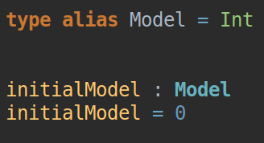
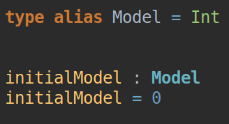
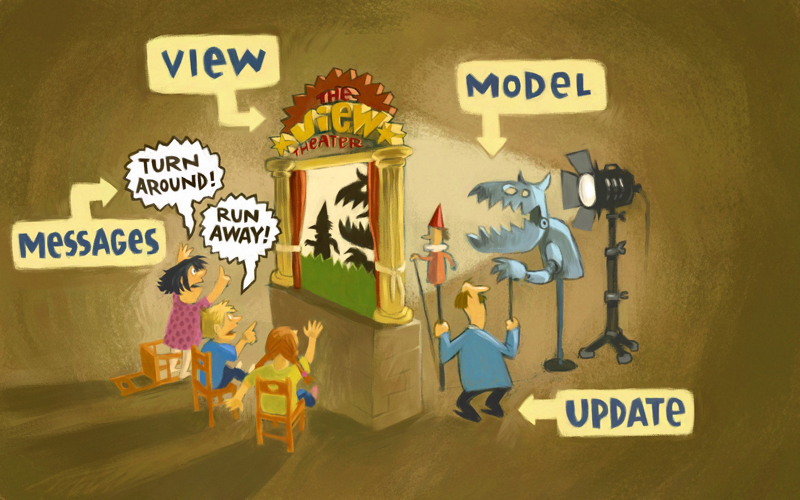
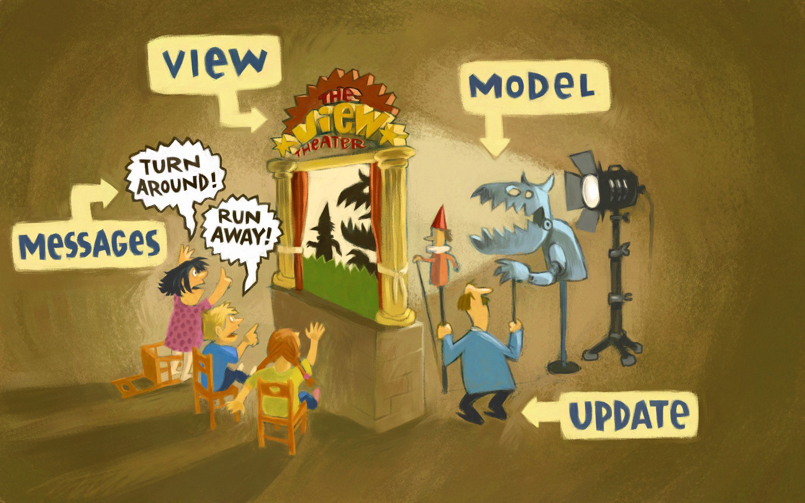
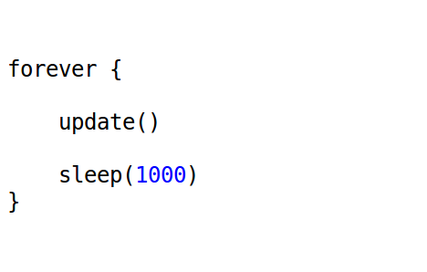

The Tricks of Game Programming in a Pure Functional Language


| Elasticsearch |
6,000 |
| Couchbase |
25,000 |
| Images |
60,000 |
| Elasticsearch |
|
| Couchbase |
|
| Images |
|
| Elasticsearch |
15,552,000,000 |
| Couchbase |
64,800,000,000 |
| Images |
155,520,000,000 |

Jordy Moos


 Demo
Demo Images
Demo
Demo Images

- Pure Functional language
- Statically Typed
- Strongly Typed
 



 

Game Programming
Game Loop

Composition over Inheritance

Implementing behaviour
LevelUpdate -> LifetimeComponent
Demo
Demo Game of Life
Demo Advent of Code
Serialization
Rendering
 https://www.elderscrollsonline.com/en-us/updates/dlc/thievesguild
https://www.elderscrollsonline.com/en-us/updates/dlc/thievesguild
https://hackster.imgix.net/uploads/attachments/341676/20170822_012800_iwgpFxyWBr.jpg?auto=compress%2Cformat&w=900&h=675&fit=min
https://medium.economist.com/can-we-know-what-animals-are-thinking-83991bc994c4
https://i2.wp.com/tuminds.com/wp-content/uploads/2016/06/Copy-of-Copy-of-the-wild.png?w=1024&ssl=1
https://www.cjnews.com/news/business/next-einstein-competition-looking-for-a-genius-idea
https://twitter.com/i/web/status/1089183825329115136
http://www.benmvp.com/learning-es6-promises/
https://www.praktijknieuwemaan.net/training-een-energiek-en-onrustig-kind-opvoeden/
https://oldgameshelf.com/roms/nes/boulder-dash/images/nes_boulder_dash_2.jpg
https://nl.motorsport.com/f1/news/verslag-derde-training-grand-prix-china-bottas-snelste-albon-crash/4369433/
https://www.trendir.com/modernist-architecture/
https://twitter.com/01k/status/986528602635358208?s=20
http://thegioivanhoa.com.vn/kham-pha-hau-truong-dung-canh-thu-vi-cua-nhung-bo-phim-bom-tan-hollywood/
https://www.deccanchronicle.com/science/science/300417/model-for-viable-time-machine-developed.html
https://javarevisited.blogspot.com/2013/06/why-favor-composition-over-inheritance-java-oops-design.html?m=1